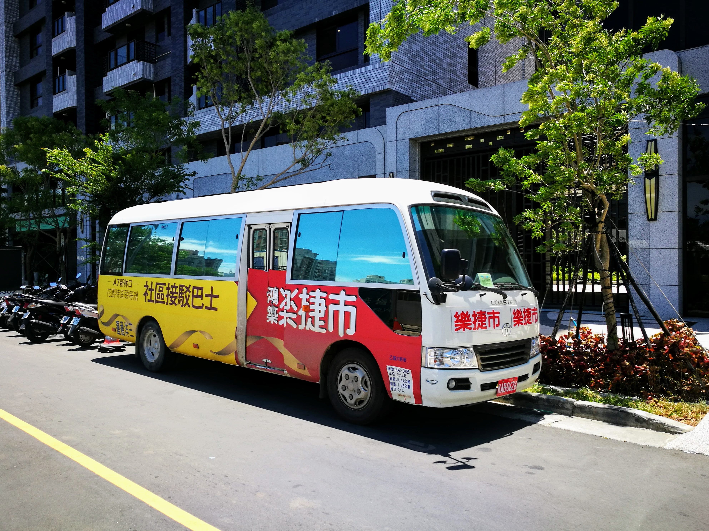
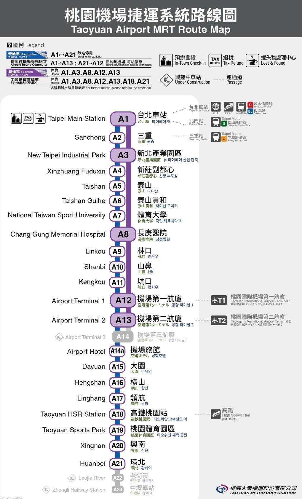
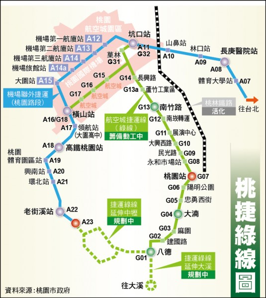

社區巴士時刻表

| 平日 樂捷市 | 假日 樂捷市 | 平日 A8 | 假日 A8 |
| 06:45, 07:10, 07:50, 08:15, 09:15, 09:40, 10:05, 15:15, 15:45, 16:30, 17:15, 17:45, 18:15, 18:45, 19:15, 19:45 | 07:50, 08:15, 08:40, 09:15, 09:40, 10:05, 10:30, 10:55, 11:25, 15:15, 15:45, 16:30, 17:15, 17:45 | 06:54, 07:35, 08:02, 08:27, 08:52, 09:27, 09:52, 10:17, 15:30, 16:00, 17:00, 17:30, 18:00, 18:30, 19:00, 19:30, 20:00 | 08:02, 08:27, 08:52, 09:27, 09:52, 10:17, 10:42, 11:07, 11:37, 15:30, 16:00, 16:45, 17:30, 18:00 |
| 社區發車 | 大岡到達 | 大岡發車 | A8到達 | A8發車 | 社區到達 | 日別 |
|---|---|---|---|---|---|---|
| 06:45 | 06:53 | 06:54 | 07:04 | 平 | ||
| 07:10 | 07:20 | 07:21 | 07:34 | 07:35 | 07:45 | 平 |
| 07:50 | 08:00 | 08:02 | 08:12 | |||
| 08:15 | 08:25 | 08:27 | 08:37 | |||
| 08:40 | 08:50 | 08:52 | 09:00 | |||
| 09:15 | 09:25 | 09:27 | 09:37 | |||
| 09:40 | 09:50 | 09:52 | 10:02 | |||
| 10:05 | 10:15 | 10:17 | 10:27 | |||
| 10:30 | 10:40 | 10:42 | 10:52 | 假 | ||
| 10:55 | 11:05 | 11:07 | 11:17 | 假 | ||
| 11:25 | 11:35 | 11:37 | 11:47 | 假 | ||
| 15:15 | 15:25 | 15:30 | 15:40 | |||
| 15:45 | 15:55 | 16:00 | 16:10 | |||
| 16:30 | 16:40 | 16:45 | 16:55 | 17:00 | 17:10 | 平 |
| 16:30 | 16:40 | 16:45 | 16:55 | 假 | ||
| 17:15 | 17:25 | 17:30 | 17:40 | |||
| 17:45 | 17:55 | 18:00 | 18:10 | |||
| 18:15 | 18:25 | 18:30 | 18:40 | 平 | ||
| 18:45 | 18:55 | 19:00 | 19:10 | 平 | ||
| 19:15 | 19:25 | 19:30 | 19:40 | 平 | ||
| 19:45 | 19:55 | 20:00 | 20:10 | 平 |
桃園捷運

- 桃園捷運官網, Wikipedia，桃園捷運綠線，桃園捷運棕線
- A8 長庚醫院站 - A1 台北車站
- 乘車時間：普通車 約30分鐘，直達車 約 22 分鐘
- 票價： 全票 70 元，優待票 35 元，兒童票 56元
- 定期票價：1 日票 320元，30 天 2,058元，60天 3,780元，90 天5,292 元，120天 5,880 元
- A8 長庚醫院站 - A13 第二航廈站
- 乘車時間：普通車 約21分鐘，直達車 約 18 分鐘
- 票價： 全票 50 元，優待票 25 元，兒童票 40元
- 定期票價：1 日票 320元，30 天 1,470元，60天 2,700元，90 天3,780 元，120天 4,200 元
A8 長庚醫院站
捷運先導公車
- 維基百科：捷運先導公車
- 桃園公車：動態資訊系統
- 綠線先導公車GR - 桃園後站 ↔ 捷運坑口站
- 1.桃園後站 - 2.聖保祿醫院 - 3.建國路口 - 4.統領百貨 - 5.桃園郵局 - 6.永和市場 - 7.中正三民路口 - 8.中正商業大樓 - 9.北埔路口 - 10.中正信光街口 - 11.中正慈文路口 - 12.慈文國中 - 13.中正大興西路口 - 14.福安宮 - 15.中正藝文特區 - 16.行政執行處 - 17.同德十一街口 - 18.莊敬路口 - 19.中正莊二街口 - 20.中正橋 - 21.南竹路口 - 22.南順一街口 - 23.奉化忠孝西路口 - 24.麗寶經典 - 25.光明郵局 - 26.光明國小 - 27.光明國中 - 28.錦興國小 - 29.南崁 - 30.台茂購物中心 - 31.下南崁 - 32.南亞/好市多 - 33.溪州 - 34.台灣松下- 35.徐厝 - 36.三商 - 37.水尾 - 38.八股路口 - 39.下水尾 - 40.果林 - 41.崁下 - 42.捷運坑口站
- 綠線先導公車GR2 - 桃園後站 ↔ 八德
- 桃園後站(G07) - 統領百貨公司 - 南華街口 - 三民建國路口 - 三民介壽路口 - 陽明公園站(G06) - 桃園監理站 - 利台 - 力行街口 - 無線電台 - 小大湳 - 忠勇西街站(G05) - 介壽大智路口 - 陸光四村 - 大湳站(G04) - 大湳辦事處 - 瑞祥社區 - 鴻昌社區 - 麻園站(G03) - 梅花社區 - 欣桃社區 - 松柏園 - 瑞豐國小 - 瑞發家園 - 更寮腳 - 聯福巷口 - 興豐路口 - 八德國中 - 八德站(G01)
- 橘線先導公車BR
- 收費方式
- GR：兩段票收費, 緩衝區：南竹路口—南崁
- GR2：一段票收費
- 每段票費用：
- 全票：新台幣18元
- 半票：新台幣9元
- 班距
- 首班車:6:00
- 末班車:22:30
- 尖峰每20分鐘一班，離峰每30分鐘一班。
市區公車
出租汽車 / UBike
Taxi 出租汽車
租車
UBike 公共自行車
- 桃園公共自行車網：UBike
- 公共自行車24小時客服專線：03-286-8833
- 費率-單次租車：
- 使用4小時內每30分鐘10元
- 4小時～8小時內每30分鐘20元
- 超過8小時以上每30分鐘40元
- 費率-會員
- 使用前30分鐘免費
- 4小時內每30分鐘10元
- 4小時～8小時內每30分鐘20元
- 超過8小時以上每30分鐘40元
- 付費方式
- 單次使用：信用卡
- 會員：悠遊卡，一卡通
- 註冊方式
- 單次使用：各站點KIOSK申辦
- 會員：服務中心申辦;官方網站申辦，官方APP申辦 (Google Play, Apple Store)，各站點KIOSK申辦
- App 下載：Google Play, Apple Store
- 使用說明：租還方式，安全騎乘
- 站點地圖：站點即時資訊
- YouBike 保險：YouTube, 北北桃YouBike傷害險
- Youtube: 騎動桃園，租借破千萬，使用教學